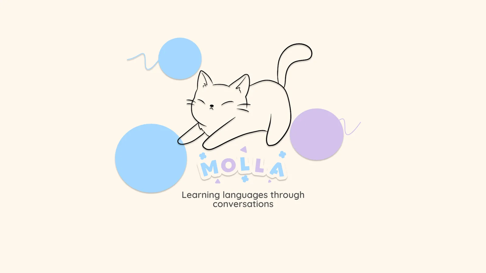
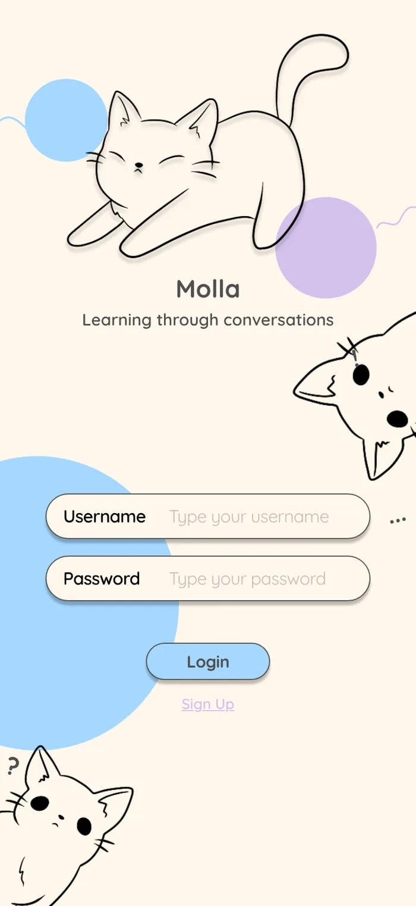
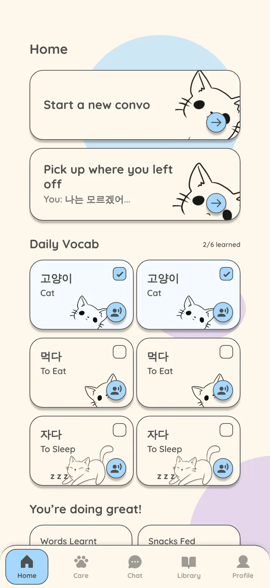
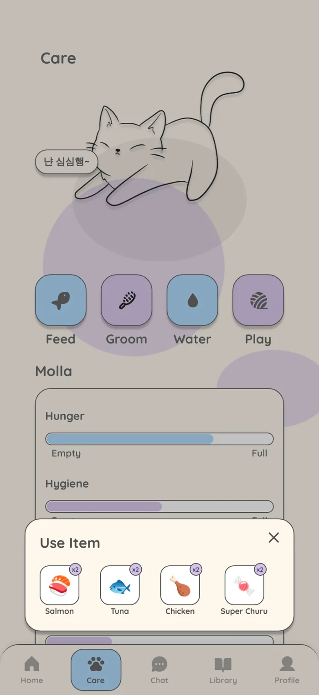
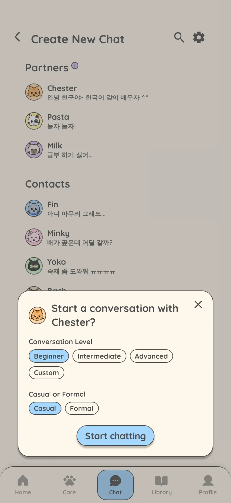
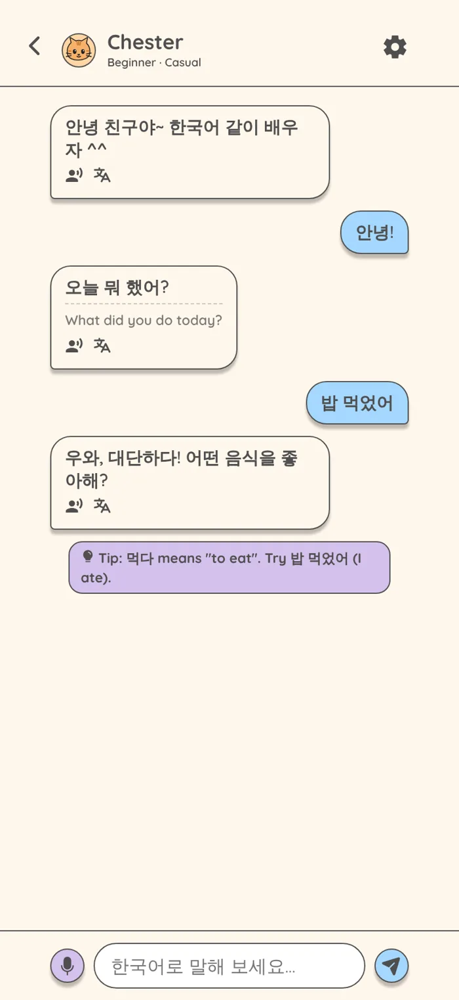
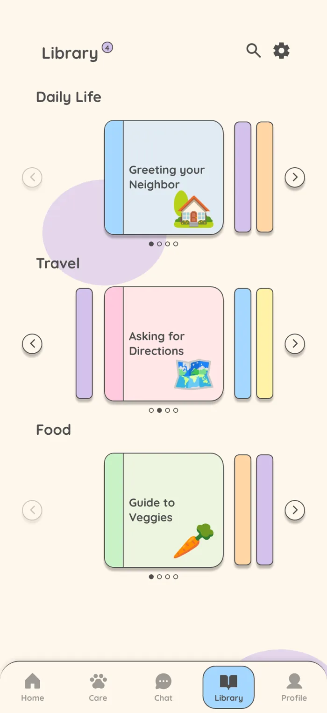
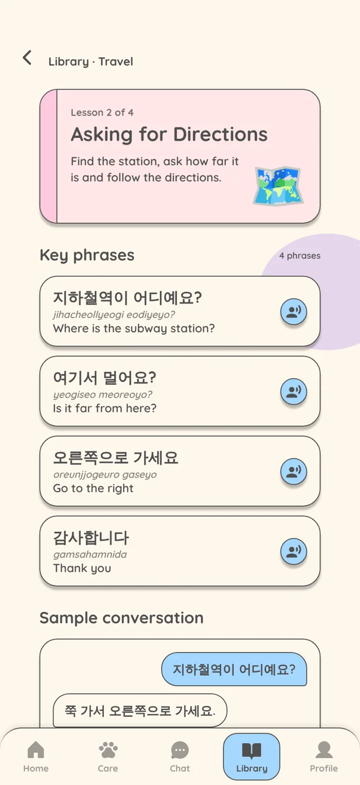
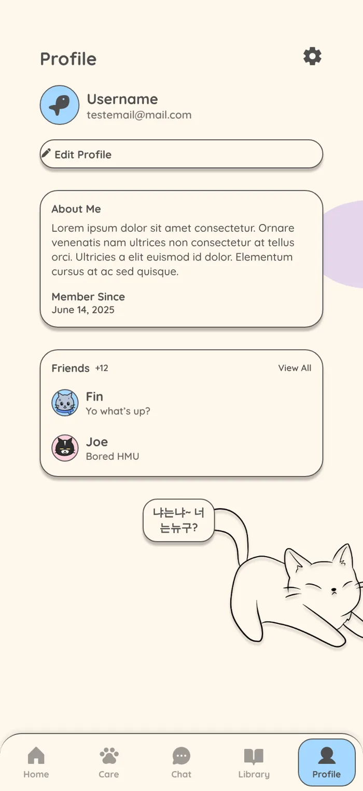

Background
Molla is a hybrid human-AI learning experience that teaches a language through conversation, both written and spoken. It focuses on how languages were meant to be learned: through immersion and dialogue. With a mix of AI conversations and real people, anyone can learn to speak a language in comfort.
Problem
Most language apps teach words and grammar in isolation. You can finish a lesson streak and still freeze the first time someone talks to you. Conversation is where people actually learn, but it is also where they feel the most pressure.
Approach
I put conversation at the center of every screen and designed around comfort. You practice with AI cat partners who never judge you, then with real friends when you are ready. Molla, the cat you take care of, gives you a gentle reason to come back every day.
The prototype
I designed Molla in Figma and turned it into a clickable, high-mid fidelity prototype so people can try the flows on their own phones. It adapts to modern phone screen sizes and keeps the Quicksand type and pastel palette from the design.
- Login: a short fish-and-wave animation (“Molla is waiting...”) carries you into the app.
- Home: start a new conversation or pick up where you left off, check off daily vocabulary and hear each word read aloud.
- Care: feed, groom, water and play with Molla using items from your inventory, and watch the hunger, hygiene, thirst and entertainment bars fill up.
- Chat: choose an AI partner or a friend, set the conversation level and how casual or formal it should be, then chat with translations, read-aloud, suggested replies and grammar tips.
- Library: flip through color-coded lessons on shelves for daily life, travel and food. Each lesson has key phrases, a sample conversation and a button to practice it with a partner.
- Profile: your details, an editable About Me and your friends.








Design decisions
A soft, friendly look
A cream background, pastel blue and lavender accents, rounded Quicksand type and hand-drawn cats keep the app calm. Learning to speak is stressful enough, so nothing on screen should add to it.
Set the tone before you talk
Before a conversation starts, you choose your level and whether the chat should be casual or formal. In Korean, that choice changes how every sentence ends, so making it up front keeps the conversation useful from the first message.
Help inside the conversation
Translations stay hidden until you ask for them, so you try to read first. Suggested replies and short grammar tips help when you get stuck without taking you out of the chat.
A companion, not a streak
Instead of a streak counter, progress shows up as care for Molla. Studying earns snacks, and the stats on Home (“Words Learnt”, “Snacks Fed”) tie the two together.
What’s next
The prototype uses scripted replies so the flows can be demoed. Next I want to connect real AI conversations and voice input, then test the chat and care loop with learners.